[SILENCE]
(2024)
photographieédition
L’édition [SILENCE] invite le lecteur à contempler les rues de Bruxelles, Paris ou encore les sentiers pyrénnéens. Les doubles pleines pages reflètent la confrontation entre les matières que l’on trouve dans les villes et celles que l’on perçoit dans la nature. Entre feuillage, roche, mousse, écorce ; ou entre bâtiment, échafaudage, voiture ou panneau, ces clichés amènent à contempler chaque détail, via le grain du papier. Chaque blanc tournant évoque le silence de cette contemplation, plongeant le lecteur vers un voyage éditorial poétique, dans une parenthèse silencieuse.
 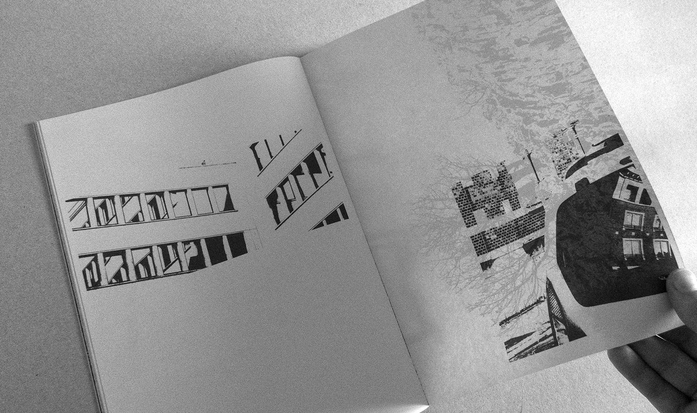
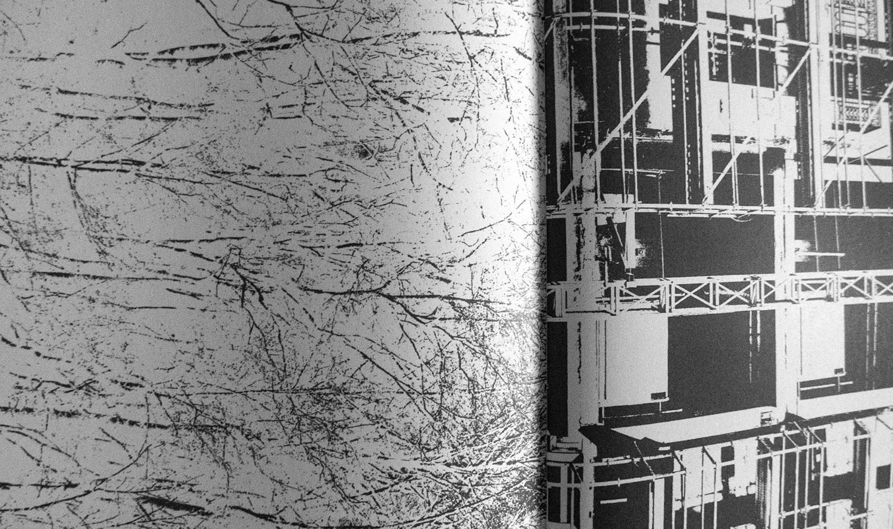
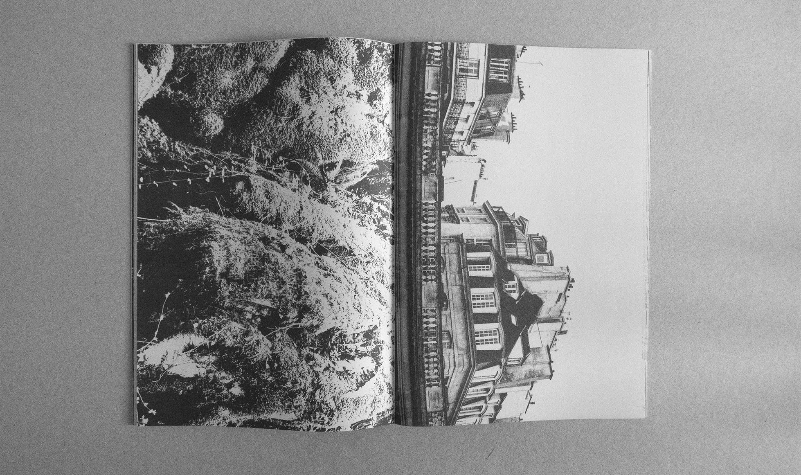
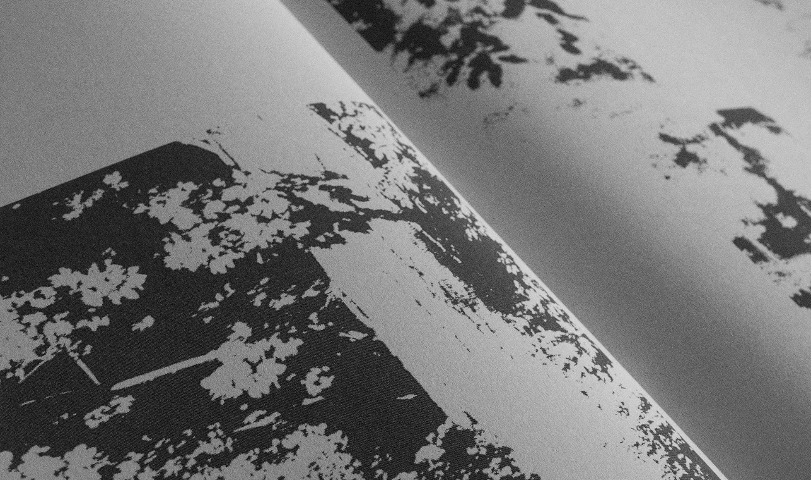
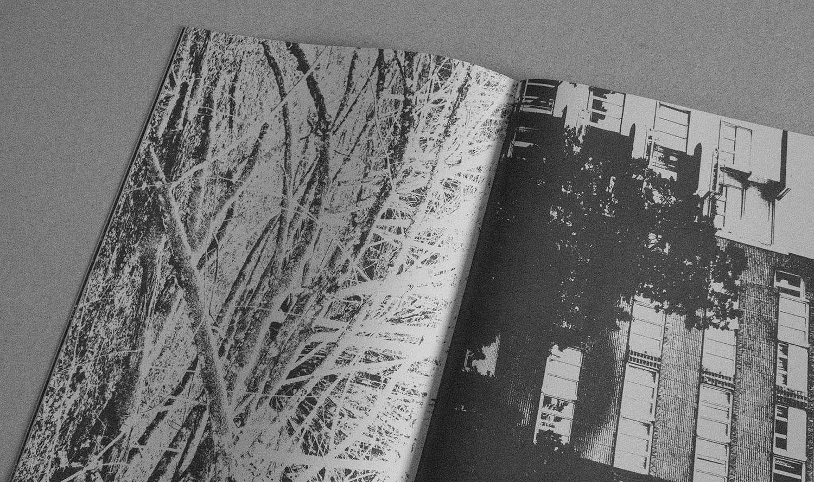
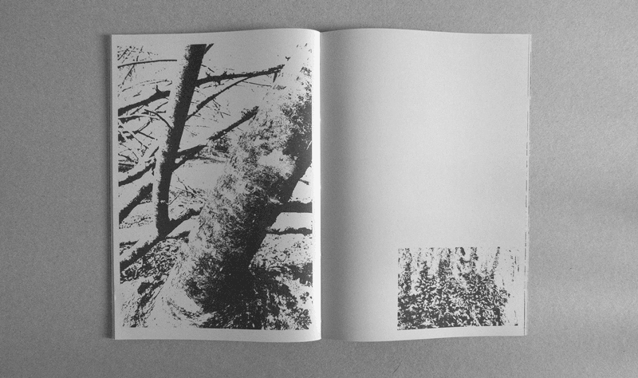
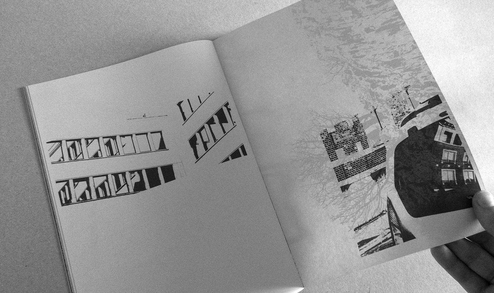
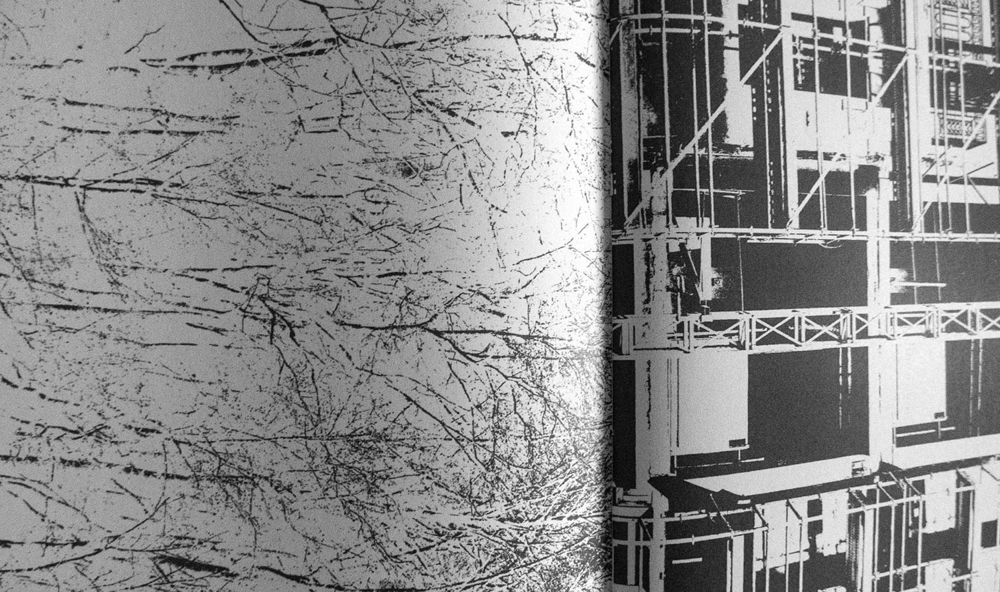
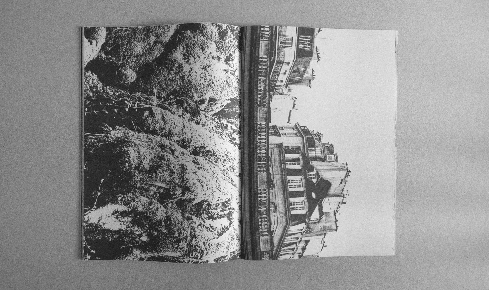
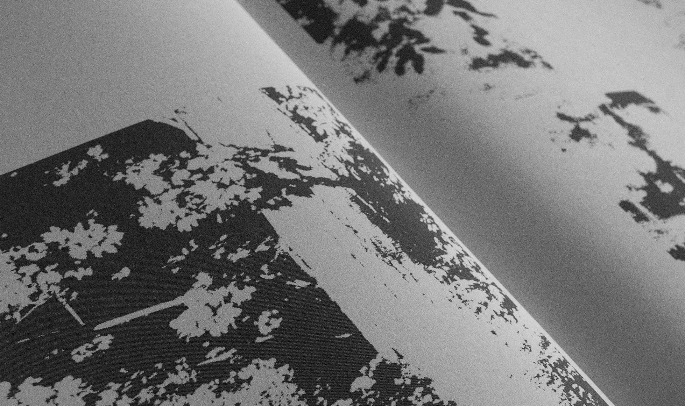
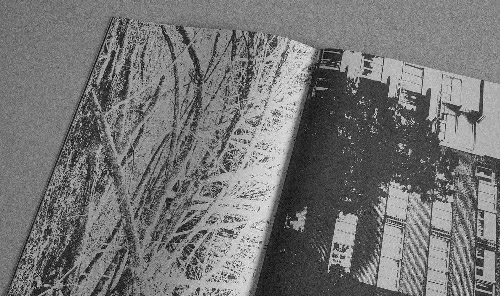
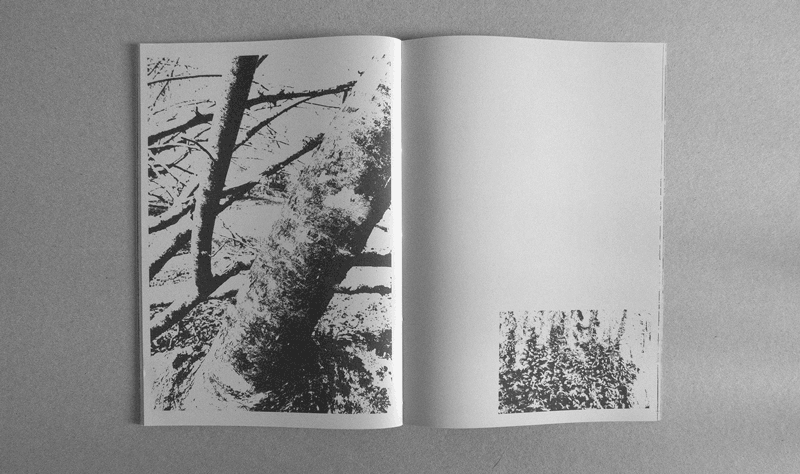